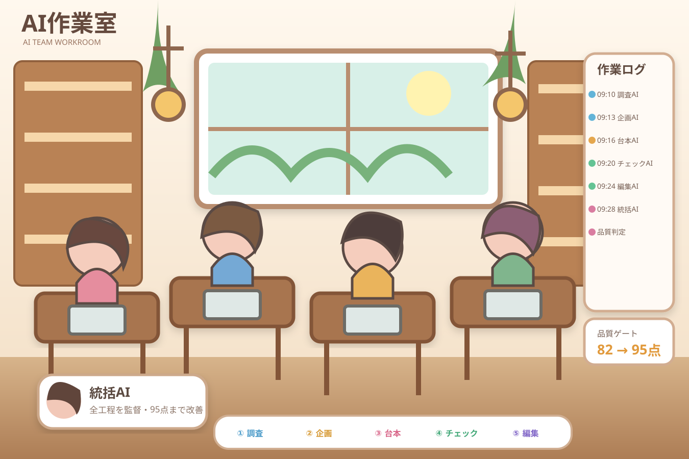

現在のプロジェクト：節約・家計ショート動画全体 45%
調査AI 70%作業中… 市場データ・根拠を収集
企画AI 45%考え中… 競争戦略を反映
台本AI 60%作業中… 視聴者向けに文章化
チェックAI 30%待機中… 受け渡し待ち
編集AI 20%作業中… 動画構成・編集
統括AI品質 82点市場調査と競争戦略を確認中
作業ログ
10:27 調査AI：市場データを確認中
10:27 企画AI：企画案を検討中
10:27 台本AI：台本を作成中
10:27 チェックAI：受け渡し待ち
10:27 編集AI：編集作業中
品質ゲート82点
● LIVE 統括AIが全工程を管理